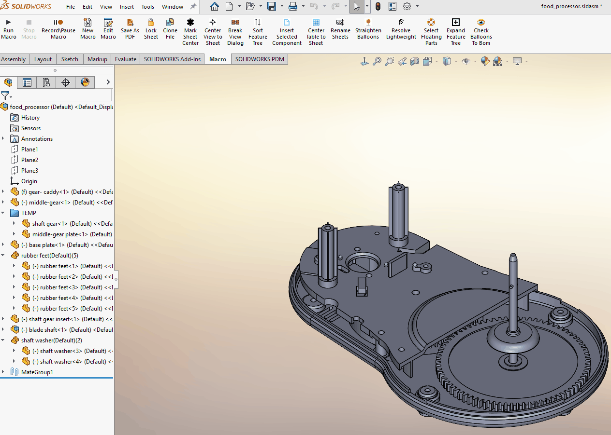
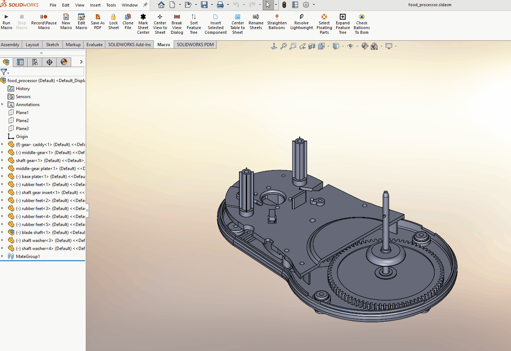
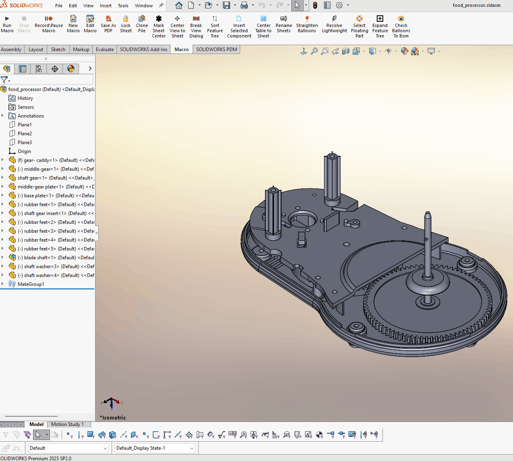

SolidWorks Macros — Case Study
Custom SolidWorks automation tools built to reduce repetitive drafting work, improve consistency, and accelerate drawing workflows.
Goals
- Reduce time spent on repetitive drawing tasks
- Improve drawing consistency and readability
- Leverage the SolidWorks API to automate common workflows
- Create reusable tools that support multi-selection and real-world drafting habits
Tools & Technologies
- SolidWorks API
- VB / VBA macros (.swp)
- SolidWorks Drawings & Annotations
- Geometry‑based logic (leader X/Y evaluation)
- User interaction via prompts
Macro 1 — Balloon Orientation
Filename: BalloonOrientation.swp
Problem
In large or frequently edited drawings, balloons often become misaligned. Manually rotating multiple balloon notes to match the drawing layout is repetitive and time‑consuming—especially when many callouts are involved.
Solution
This macro automatically orients drawing balloons vertically or horizontally based on the leader’s X/Y direction and a user‑selected orientation.
- Uses the balloon leader’s X/Y location
- Applies consistent orientation logic
- Supports single or multiple balloon selections
- Executes instantly within SolidWorks drawings
How It Works (High‑Level)
- User selects one or more drawing balloons
- Macro prompts for desired orientation (vertical or horizontal)
-
For each balloon:
- Evaluates leader endpoint X/Y direction
- Determines optimal text rotation
- Applies orientation while preserving leader attachment
Demo

Why This Matters
- Saves several minutes per drawing
- Ensures drafting consistency across sheets
- Scales efficiently for drawings with many callouts
- Demonstrates SolidWorks API + geometry reasoning
Code
*Demonstration uses non‑proprietary sample drawings.*
Macro 2 — Center Drawing View
Filename: CenterDrawingView.swp
Problem
When working with long or narrow components—such as ball screws or shafts— drawing views often require repeated manual repositioning to achieve a visually balanced layout. This interrupts the dimensioning workflow and can make it difficult to maintain consistency across drawings.
Solution
This macro automatically centers a selected drawing view on the active drawing sheet by aligning it in both the X and Y directions. It is intended to improve visual clarity and create a clean, well‑balanced starting point for dimensioning.
- Centers the selected drawing view in X and Y
- Operates on the active drawing sheet
- Requires only a single view selection
- Executes instantly within SolidWorks
How It Works (High‑Level)
- User selects a drawing view
- Macro calculates the center of the active sheet
- View position is updated to match the sheet center
- Dimensions can then be placed neatly and consistently
Demo

Why This Matters
- Improves drawing readability and visual balance
- Reduces repetitive view repositioning
- Helps ensure clean, symmetric dimension placement
- Especially useful for long parts such as ball screws
Code
*Demonstration uses non‑proprietary sample drawings.*
Macro 3 — Expand Feature Tree
Filename: ExpandFeatureTree.swp
Problem
SolidWorks provides options to collapse items in the FeatureManager tree (such as grouped component instances, folders, and mate folders), but does not provide a native option to expand them back programmatically. This can make it difficult to quickly identify hidden, suppressed, or patterned components in large assemblies.
While mate folders can become extremely long and noisy when expanded, grouped component instances and feature folders are often critical for understanding assembly structure and visibility state.
Solution
This macro automatically expands grouped component instances and feature folders in the FeatureManager tree, improving assembly visibility and navigation. Mate folders are intentionally excluded to avoid unnecessary clutter.
- Expands grouped component instances
- Expands feature folders
- Improves visibility of hidden and suppressed parts
- Leaves mate folders collapsed to reduce tree noise
- Executes instantly in large assemblies
How It Works (High‑Level)
- Macro scans the FeatureManager design tree
- Identifies expandable group and folder nodes
- Programmatically expands only relevant tree items
- Skips mate folders to preserve usability
Demo

Why This Matters
- Quickly exposes hidden or suppressed components
- Reduces time spent manually clicking through the tree
- Improves situational awareness in complex assemblies
- Balances automation with usability by avoiding mate folder expansion
Code
*Demonstration uses non‑proprietary sample assemblies.*
Macro 4 — Sort Feature Tree
Filename: SortFeatureTree.swp
Problem
In large SolidWorks assemblies, top‑level components are often added over time without a consistent order. This can result in a FeatureManager tree that is difficult to scan, making it harder to locate components and understand overall assembly structure.
Native SolidWorks tools do not provide an intuitive way to sort components based on common part‑number naming conventions, especially when instance numbers are involved.
Solution
This macro reorders top‑level assembly components into a predictable, human‑readable order. It is designed around typical mechanical part naming practices and safely updates the FeatureManager tree without destabilizing the assembly.
- Includes suppressed top‑level components
- Groups components by name type (numeric‑starting vs letter‑starting)
- Sorts by base component name and numeric instance order
- Reorders components using a safe FeatureManager folder method
How It Works (High‑Level)
- Macro retrieves the root component of the active configuration
- All top‑level components are collected, including suppressed ones
- Components are grouped based on how their names begin
- Each group is sorted using unified comparison logic
- A temporary FeatureManager folder is used to safely reorder components
- The temporary folder is removed and the tree is rebuilt
Demo

Why This Matters
- Makes large assembly trees easier and faster to navigate
- Preserves intuitive numeric part ordering
- Improves component discoverability
- Avoids unsafe or unstable tree modifications
- Demonstrates careful use of SolidWorks FeatureManager APIs
Code
*Demonstration uses non‑proprietary sample assemblies.*
Macro 5 — Select Floating Parts
Filename: SelectFloatingPart.swp
Problem
During assembly development, SolidWorks may report an assembly as under‑defined even when it appears visually complete, or report a large assembly as fully defined while some components remain floating.
Although SolidWorks provides an Advanced Component Selection tool to help identify under‑defined components, using it requires navigating multiple menus, defining search criteria, and manually applying filters each time a check is needed. In large or fastener‑heavy assemblies, this disrupts workflow and discourages frequent validation.
Solution
This macro encapsulates the Advanced Component Selection logic into a single, repeatable action. It evaluates the constraint status of top‑level components only and automatically selects under‑constrained parts.
Once selected, the floating components can be immediately isolated in the graphics view, making it easy to pinpoint missing or incomplete mates without inspecting parts one at a time.
- Identifies under‑constrained top‑level components
- Selects floating components directly in the graphics area
- Eliminates manual Advanced Select setup
- Avoids traversing into subassemblies
- Provides non‑blocking progress feedback
- Supports ESC key cancellation
- Executes efficiently in large assemblies
How It Works (High‑Level)
- Verifies that an assembly document is active
- Retrieves the root component of the active configuration
- Iterates through top‑level child components only
- Evaluates each component using
GetConstrainedStatus - Selects all under‑constrained components
- Displays progress and a final selection summary
Demo

Why This Matters
- Reduces multi‑step Advanced Select workflows to a single action
- Encourages frequent constraint validation during design
- Improves accuracy during assembly reviews
- Scales well for large and fastener‑heavy assemblies
- Provides deterministic, repeatable diagnostic results
Code
*Demonstration uses a SolidWorks‑provided sample assembly included with the standard installation tutorials.*